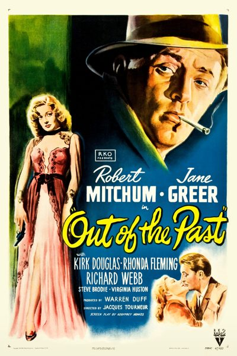

Out of the Past

Starring: Robert Mitchum, Jane Greer, Kirk Douglas
Director: Jacques Tourneur
Writer: James M. Cain, Daniel Mainwaring, Frank Fenton
Producer: Warren B. Duff
Out of the Past (billed in the United Kingdom as Build My Gallows High) is a 1947 American film noir by director Jacques Tourneur and starring Robert Mitchum, Jane Greer and Kirk Douglas. The film was adapted by Geoffrey Homes (Daniel Mainwaring) from his 1946 novel Build My Gallows High (also written as Homes), with uncredited revisions by Frank Fenton and James M. Cain.
Trivia
- Based on Build My Gallows High (novel by Daniel Mainwaring, alias Geoffrey Homes).
- Daniel Mainwaring wrote Build My Gallows High in 1946 while on retreat after writing six screenplays in one year.
- The title for the novel originated in a poem, believed by one scholar to be "Haman" from Benjamin Cutler Clark's The Past, Present, and Future (1867).
- Gallup's Audience Research recommended that RKO change the title to Out of the Past.
Filming Locations
- Mexico
Previous Showings
6 Runs • 3 Festivals
6,008 tickets sold
Original Billings: 2 runs (October 8, 1933 - February 11, 1948)
Original Run: October 8, 1933 (Sunday - Tuesday)
All runs on record (6):
- Short October 8, 1933 (Sunday - Tuesday)comedy short
- February 11, 1948 (Wednesday - Thursday)Robert Mitchum, Jane Greer
- February 13 - 16, 1997 · 2,179 ticketsw/ Phantom Lady
- March 8 - 9, 2003 · 1,057 ticketsFilm Noir and Pre-Codew/ Kiss Me Deadly
- September 26 - 29, 2013 · 1,608 ticketsThe Best of Bogart and Film Noir Classicsw/ To Have and Have Not
- October 19 - 20, 2024 · 1,164 ticketsFilm Noir plus Val Lewtonw/ Laura